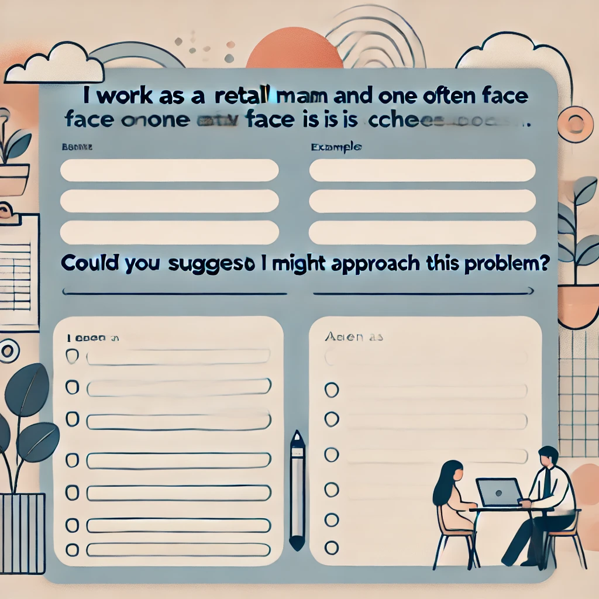
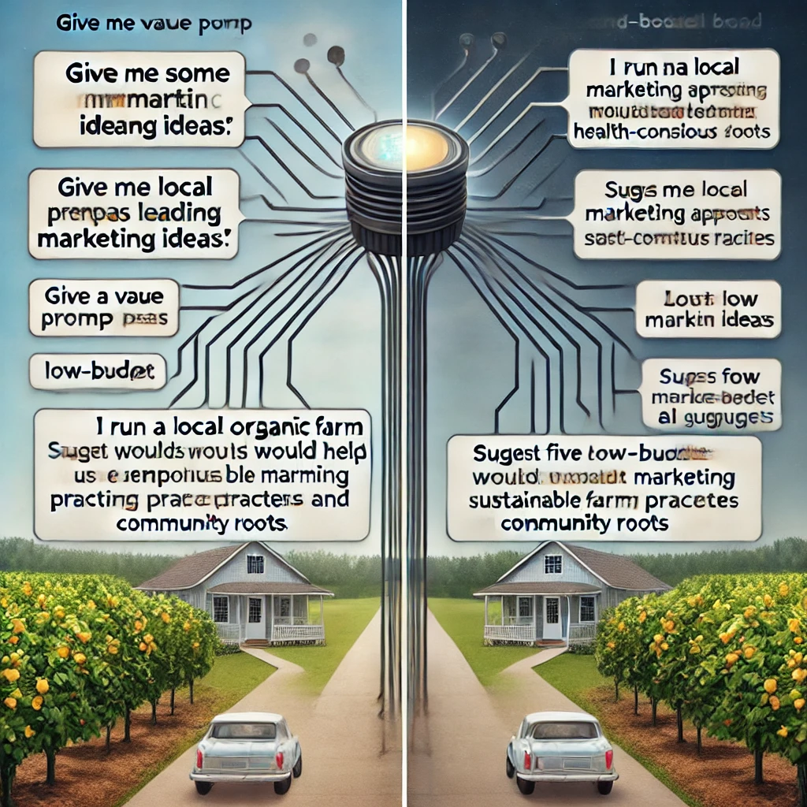
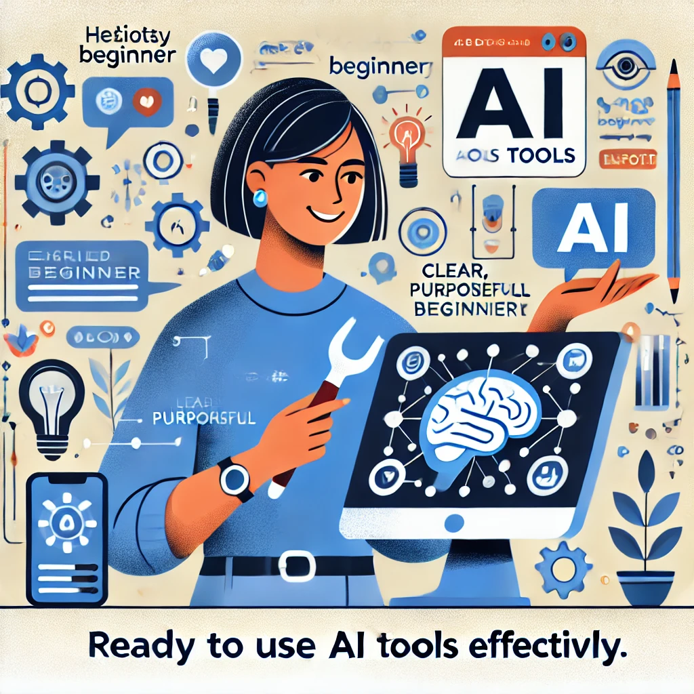

A Practical Guide to Using AI in Everyday Life
¿Alguna vez has visto a alguien usar una nueva tecnología y hacer que parezca sencillo, sólo para sentirte perdido cuando lo intentas tú mismo? ¿O quizás has escuchado sobre ChatGPT y otras herramientas de IA en las noticias pero aún no las has probado, inseguro de si son demasiado complicadas o técnicas para ti?
No estás solo. Muchas personas encuentran estas tecnologías intimidantes o no están seguras por dónde empezar. La buena noticia es que no necesitas ser un experto en tecnología para usar estas herramientas de manera efectiva. De hecho, las habilidades más importantes que necesitarás son las que ya tienes: curiosidad, criterio y tu propia perspectiva única sobre lo que importa.
De eso se trata este libro: mostrarte cómo combinar tu sabiduría humana con herramientas de IA para lograr cosas que son importantes para ti. Llamamos a esta asociación Inteligencia Real—un marco que te centra a ti, no a la tecnología, en el proceso.
Antes de sumergirnos, tómate un momento para anotar tus respuestas a estas preguntas:
Mantén estas respuestas a mano; te ayudarán a personalizar tus primeras experiencias con IA a medida que avanzamos en este capítulo.
En las páginas siguientes, estableceremos un marco simple para pensar sobre las herramientas de IA, demostraremos lo fácil que es comenzar a usarlas (¡sin conocimientos técnicos necesarios!) y te mostraremos por qué tu dirección y criterio son los ingredientes críticos para obtener resultados valiosos.
Comencemos nuestro viaje hacia convertirnos en directores confiados y efectivos de estas poderosas herramientas, comenzando desde la primera interacción.
…La Colaboración Humano-IA
Comencemos con algo simple. No se requieren habilidades técnicas, solo la capacidad de escribir una frase.
Hola, soy nuevo en ChatGPT. ¿Puedes explicarme en términos sencillos en qué me puedes ayudar?¡Eso es todo! Acabas de tener tu primera conversación con IA.

Observa cómo la IA se presenta y explica sus capacidades. Este no es un mensaje pregrabado; la IA está generando esta respuesta específicamente para ti. En los próximos capítulos, aprenderás cómo hacer que estas conversaciones sean cada vez más útiles para tus necesidades específicas.
María, una propietaria de un pequeño negocio sin experiencia técnica, describió su primera experiencia: “Honestamente esperaba que fuera complicado, como si necesitara aprender comandos especiales o algo así. Pero fue como enviar mensajes de texto. Pregunté cómo escribir un mejor boletín por correo electrónico, y en segundos tenía ideas que realmente podía usar. Sin jerga técnica, sin configuración complicada.”
Piensa en las herramientas de IA como electrodomésticos de cocina. Una batidora de pie puede hacer el trabajo duro de mezclar la masa, pero no decide qué receta hacer o sabe cuándo la consistencia es perfecta; ese es tu trabajo. La batidora es muy buena en su tarea específica, pero tú eres quien tiene las papilas gustativas, la creatividad para modificar recetas y el conocimiento de si estás horneando para alguien con restricciones dietéticas.

Inteligencia Real es esta colaboración entre tu juicio humano y las capacidades de la IA. Es lo que sucede cuando tu sabiduría, creatividad y propósito se combinan con la capacidad de la IA para procesar información y generar contenido.
Piensa en la última vez que usaste una herramienta poderosa para resolver un problema. Quizás fue un procesador de alimentos que redujo tu tiempo de preparación a la mitad, o un software de mapas que te ayudó a navegar por una ciudad desconocida. La herramienta fue invaluable, pero tú fuiste quien decidió qué cocinar o a dónde ir. Esa es exactamente tu relación con la IA: no solo estás presionando botones, eres el director creativo que toma las decisiones.

En lugar de pensar en la IA como una entidad mágica con mente propia, considera esta simple relación:
¿Por qué importa tanto esta relación? Porque entenderla transforma la manera en que usarás estas herramientas todos los días.
Cuando reconoces que eres el director y la IA es tu asistente, naturalmente tomas el control del proceso en lugar de aceptar pasivamente lo que la IA produce. Desarrollas expectativas más claras sobre lo que estas herramientas pueden (y no pueden) hacer por ti. Te enfocas en fortalecer las habilidades exclusivamente humanas que la IA no puede replicar. Y quizás lo más importante, mantienes la propiedad de tu trabajo e ideas.
¿No es esa una forma más empoderadora de abordar estas herramientas?
Veamos esta colaboración en acción a través de un ejemplo real.
Luisa, una profesora de ciencias de secundaria sin experiencia previa en IA, quería crear una lección sobre el cambio climático. Podría haber simplemente pedido a ChatGPT que cree una lección sobre cambio climático para estudiantes de 7º grado y usar lo que generara, pero eso habría ignorado su conocimiento único de sus estudiantes.

En cambio, Luisa aplicó su criterio humano. Conocía a sus estudiantes específicos: sus niveles de conocimiento, intereses y los problemas ambientales locales que ven todos los días. Entendía con qué conceptos habían luchado en lecciones anteriores.
Con este contexto que ninguna IA podría poseer, Luisa dirigió a ChatGPT con una solicitud más específica: Ayúdame a crear una demostración interactiva que muestre cómo funcionan los gases de efecto invernadero, adecuada para estudiantes de 7º grado que ya han aprendido sobre el ciclo del agua pero tienen dificultades con conceptos abstractos.
La lección resultante fue mucho más efectiva porque combinó la comprensión de Luisa sobre sus estudiantes con la capacidad de la IA para generar ideas creativas de enseñanza. Esa es la Inteligencia Real en acción: tú sigues siendo central en el proceso mientras aprovechas la IA como una herramienta poderosa.
Ahora es tu turno. Vamos a crear una solicitud que sea específicamente relevante para ti. Completa los espacios en blanco a continuación: Trabajo como _____________ y un desafío que enfrento a menudo es _____________. ¿Podrías sugerirme tres formas en las que podría abordar este problema?

Por ejemplo: Trabajo como gerente de tienda y un desafío que enfrento a menudo es programar al personal de manera eficiente. ¿Podrías sugerirme tres formas en las que podría abordar este problema?
o
Trabajo como padre/madre y un desafío que enfrento a menudo es encontrar actividades educativas para días lluviosos. ¿Podrías sugerirme tres formas en las que podría abordar este problema?
En las siguientes secciones, exploraremos qué hace que la inteligencia humana sea única y cómo complementa las capacidades de la IA. Pero recuerda, no necesitas entender todos los detalles técnicos para comenzar a usar estas herramientas de manera efectiva hoy mismo.
Quizás te estés preguntando… “¿Necesito aprender programación o ciencias de la computación para usar estas herramientas de IA de manera efectiva?”
La respuesta simple es no. Usar herramientas de IA como ChatGPT no requiere más habilidades técnicas que usar un motor de búsqueda o enviar un mensaje de texto. Si puedes escribir una pregunta, puedes usar IA.

Lo que importa mucho más que el conocimiento técnico es tu capacidad para:
Estas son habilidades humanas que has estado desarrollando toda tu vida, y son exactamente lo que te convierte en la Inteligencia Real en esta colaboración.
Para usar las herramientas de IA de manera efectiva, es útil entender qué hace que la inteligencia humana sea diferente de la inteligencia artificial, y por qué esa diferencia crea una asociación tan poderosa.
La inteligencia humana tiene varias cualidades que los sistemas de IA actuales simplemente no poseen, a pesar de sus impresionantes capacidades:
Los humanos no solo hacemos cosas, las hacemos por razones. Nos preguntamos por qué, establecemos metas basadas en nuestros valores y sentimos satisfacción cuando logramos algo significativo. Nos importa profundamente el propósito detrás de una actividad, no solo completarla.
Los sistemas de IA, en contraste, no tienen propósitos o deseos intrínsecos. No quieren nada; simplemente procesan entradas y generan salidas. Cualquier sentido de propósito debe provenir de los humanos que los utilizan.

Piensa en tu profunda comprensión del mundo, construida a través de la experiencia vivida. Sabes cómo se siente cuando te sorprende la lluvia sin paraguas. Entiendes el peso emocional de recibir buenas noticias inesperadas. Comprendes la sutil dinámica social de una reunión familiar.
Los sistemas de IA como ChatGPT han sido entrenados con enormes cantidades de texto que describen el mundo, pero nunca han vivido realmente en él. Han “leído” sobre el helado pero nunca lo han probado. Pueden describir cómo es estar bajo la lluvia, pero nunca han sentido esa repentina salpicadura fría o esa carrera loca buscando refugio. Es como la diferencia entre leer una guía de viaje y visitar realmente un lugar; por muy detallada que sea la guía, hay algo esencial sobre la experiencia que simplemente no puede ser capturado en palabras.
Elena, una profesora de arte jubilada, era escéptica sobre el uso de la IA para su afición a la acuarela. “No veía cómo un programa de computadora podía ayudar con algo tan personal como el arte”, dijo. Pero cuando le pidió a ChatGPT sugerencias para pintar hojas de otoño con más vivacidad, se sorprendió gratamente.

“Las técnicas que sugirió eran fundamentos sólidos, cosas que podría decirles a mis propios estudiantes. Pero aún tenía que aplicar mi sentido del color, mi sentido de la composición y mis propias preferencias estéticas. La IA me dio opciones para considerar, pero las decisiones creativas siguieron siendo mías.”
Esto ilustra otra diferencia clave: la creatividad humana a menudo implica hacer conexiones inesperadas, inspirarse en ideas aparentemente no relacionadas o tener repentinas intuiciones que no se pueden explicar completamente. Nuestra intuición nos permite tomar decisiones basadas en señales sutiles y años de experiencia.
Si bien la IA puede recombinar ideas existentes de maneras impresionantes, no tiene la chispa de inspiración genuina o el sentido intuitivo que permite a los humanos dar saltos más allá de lo que se conoce explícitamente.
Estas diferencias no son debilidades, son la base de una asociación poderosa. La IA y los humanos son como compañeros de equipo con fortalezas complementarias.
Imagina que estás investigando sobre una condición de salud que afecta a alguien que amas. Podrías pasar semanas leyendo revistas médicas, tratando de entender terminología compleja y estudios contradictorios. O podrías pedirle a una IA que resuma la investigación actual, explique términos clave y destaque opciones de tratamiento, todo en minutos. Aquí es donde la IA realmente brilla: procesando vastas cantidades de información que abrumarían incluso al lector humano más dedicado.

La IA sobresale en:
Procesamiento de Información: Sintetizar rápidamente enormes cantidades de información y encontrar patrones en vastos conjuntos de datos.
Producción Consistente: Trabajar incansablemente sin aburrirse, distraerse o emocionarse.
Generación Rápida de Ideas: Producir múltiples opciones, borradores o enfoques para un problema en segundos.
Aprendizaje de Patrones: Identificar tendencias y conexiones en datos que los humanos podrían pasar por alto.
Una forma útil de entender esta relación es pensar en ti mismo como un director de cine y en la IA como tu asistente.

Como director, tú:
El asistente de IA:
Sin el director, el asistente no tendría propósito ni dirección. Sin el asistente, el director tendría que manejar solo cada pequeño detalle.
¿Cómo se ve esto en la práctica? Veamos cómo Marcos, un dueño de un pequeño negocio sin experiencia técnica, pone en acción esta colaboración.
Marcos es propietario de una panadería exitosa y está considerando abrir un segundo local. En lugar de simplemente preguntar a la IA: “¿Dónde debería abrir mi segunda panadería?” — una pregunta que la IA no podría responder bien sin conocer su negocio específico — Marcos dirige la IA con indicaciones más específicas:

¿Qué datos demográficos debería analizar al seleccionar una nueva ubicación para una panadería?Ayúdame a crear una lista de verificación para evaluar posibles espacios comerciales para una panadería.¿Cuáles son los desafíos típicos que enfrentan las panaderías al abrir un segundo local?Observa el patrón aquí: cada pregunta aprovecha la capacidad de la IA para organizar información mientras mantiene a Marcos firmemente en el papel de tomador de decisiones. La IA proporciona marcos e información valiosos, pero Marcos toma la decisión final basada en factores que solo él puede entender completamente: su apetito por el riesgo, su intuición sobre diferentes vecindarios y su visión para su marca.
En la siguiente sección, exploraremos en términos simples cómo funcionan realmente estas herramientas de IA, lo que te ayudará a comprender sus capacidades y limitaciones sin requerir ningún conocimiento técnico.
Para dirigir efectivamente las herramientas de IA, no necesitas entender todos los detalles técnicos, al igual que no necesitas saber exactamente cómo funciona el motor de un auto para conducir de manera efectiva. Sin embargo, tener una comprensión conceptual básica te ayudará a establecer expectativas realistas y usar estas herramientas con mayor habilidad.
Exploraremos cómo funcionan herramientas de IA como ChatGPT, usando analogías simples que destacan tanto sus capacidades como sus limitaciones.
“Cuando escuché por primera vez sobre IA, imaginaba algo de películas de ciencia ficción, como una computadora que piensa y siente”, dice Jaime, un jubilado que ahora usa ChatGPT diariamente para ayudar con su afición a la genealogía. “Pero una vez que comencé a usarla, me di cuenta de que es más como tener un asistente de investigación muy culto que es increíblemente rápido pero necesita dirección cuidadosa.”

En su esencia, una IA como ChatGPT es una sofisticada máquina de completar patrones. Imagina que estás jugando con un amigo donde comienzas una frase y ellos la terminan:
Tú dices: El chef puso el pastel en el...
Tu amigo casi seguramente responde: horno
¿Por qué? Porque basándose en todo el lenguaje que ha encontrado a lo largo de su vida, horno es la palabra más probable que sigue en este contexto.
ChatGPT hace algo similar, pero a una escala mucho mayor. Ha sido entrenado con enormes cantidades de texto de libros, artículos, sitios web y otras fuentes. Durante este entrenamiento, aprendió a reconocer patrones en cómo las palabras e ideas normalmente se siguen unas a otras.

Piénsalo como un músico que ha escuchado miles de canciones pero no entiende realmente la teoría musical. Cuando tarareas algunas notas, el músico puede continuar la melodía basándose en patrones similares que ha escuchado antes. No está componiendo algo verdaderamente original, está recurriendo a toda la música que ha absorbido para continuar el patrón que iniciaste.
Otra forma útil de pensar sobre estas herramientas de IA es como una cámara de eco del conocimiento humano. Solo pueden reflejar información y patrones que ya existen en los datos con los que fueron entrenadas.
Si le preguntas a ChatGPT sobre la Revolución Francesa, puede proporcionar información porque muchos escritores humanos han escrito sobre este tema, y esos escritos formaron parte de sus datos de entrenamiento. Pero si preguntas sobre un evento histórico completamente ficticio del que nadie ha escrito, no puede proporcionar información precisa porque ese patrón no existe en sus datos de entrenamiento.
Esto significa que las herramientas de IA: - Pueden reflejar el conocimiento humano existente y los patrones de escritura - No pueden generar descubrimientos o ideas verdaderamente novedosos que no se deriven de conocimientos existentes - Pueden presentar con confianza información que parece plausible pero que es realmente incorrecta
A pesar de su impresionante capacidad para generar texto similar al humano, ChatGPT no “entiende” realmente el significado de las palabras como lo hacen los humanos. Predice qué palabras es probable que sigan a otras basándose en patrones estadísticos, no en conectar esas palabras con experiencias del mundo real o conceptos más profundos.
Piénsalo como alguien que ha memorizado un libro de cocina en un idioma extranjero sin entender lo que significan las palabras. Podrían recitar recetas perfectamente e incluso hacer sustituciones razonables basadas en patrones que han observado, pero nunca han probado la comida, sentido la textura de los ingredientes o entendido por qué se utilizan ciertas técnicas.

Esta limitación explica por qué la IA a menudo tiene dificultades con: - Razonamiento de sentido común - Comprensión del mundo físico - Captación de causa y efecto - Distinción entre tonterías que suenan plausibles y la verdad real
Cuando ChatGPT genera texto, esencialmente está haciendo una serie de elecciones de palabras basadas en la probabilidad. Para cada posición en una oración, calcula qué palabra es más probable que venga a continuación, dados los términos precedentes y el contexto general.
Imagina un juego donde comienzas una oración, y alguien tiene que adivinar qué palabra viene después:
El chef puso el pastel en el...
La mayoría de las personas adivinarían "horno" porque esa es la palabra más probable que sigue en este contexto. Los sistemas de IA hacen algo similar, pero con una comprensión mucho más sofisticada de los patrones del lenguaje y un vocabulario mucho más amplio de posibles palabras entre las que elegir.

Este enfoque probabilístico significa que: - ChatGPT no tiene un conjunto fijo de respuestas—genera nuevo texto cada vez - Las respuestas pueden variar incluso ante indicaciones idénticas - La IA no “decide” qué decir basada en el razonamiento—selecciona palabras basadas en la probabilidad
Entender estos conceptos básicos sobre cómo funciona la IA ayuda a explicar tanto sus impresionantes capacidades como sus sorprendentes limitaciones:
Puede generar texto similar al humano porque ha aprendido patrones de una vasta cantidad de escritura humana
Puede proporcionar información sobre muchos temas porque ha sido entrenada con textos diversos
Tiene dificultades con la precisión factual porque está prediciendo texto plausible, no verificando la verdad
No puede razonar o entender realmente porque está coincidiendo con patrones, no comprendiendo el significado
No tiene experiencias ni objetivos porque es un sistema de predicción de texto, no una entidad consciente
Estas características hacen que las herramientas de IA sean increíblemente útiles para ciertas tareas, pero también destacan por qué la dirección y el juicio humanos—tu Inteligencia Real—siguen siendo esenciales.
Dadas estas limitaciones, es útil pensar en las herramientas de IA como asistentes en lugar de expertos o autoridades. Pueden ayudarte a hacer lluvia de ideas, redactar contenido, resumir información y explorar ideas, pero siempre debes aplicar tu propio juicio a su producción.

Recuerda a Javier, que está planeando unas vacaciones familiares a Japón. Si simplemente le pide a ChatGPT "Planifica mi viaje perfecto a Japón" y sigue cualquier itinerario que genere, podría terminar con una experiencia turística genérica que no coincide con los intereses de su familia o visitar atracciones que están cerradas por renovación.
En cambio, Javier utiliza su comprensión de las limitaciones de la IA para dirigir la herramienta de manera más efectiva. Sabe que: - La información de la IA podría estar desactualizada - No conoce las preferencias específicas de su familia - No puede verificar si los alojamientos sugeridos están realmente disponibles
Así que utiliza la IA como un asistente para tareas específicas donde la coincidencia de patrones es útil—generar ideas para actividades aptas para niños en Tokio, sugerir redacción para frases básicas en japonés o crear una lista de comprobación para el equipaje—mientras maneja por sí mismo las decisiones críticas y verifica información clave a través de otras fuentes.
En la siguiente sección, exploraremos cómo tomar el control de esta asociación humano-IA para obtener el mayor valor de estas herramientas poderosas pero limitadas.
Ahora que entendemos la relación entre la inteligencia humana y las capacidades de la IA, enfoquémonos en dos elementos críticos que harán que tus experiencias con IA sean exitosas: cómo dirigir efectivamente estas herramientas y qué deberías esperar realistamente de ellas.
¿Recuerdas nuestra metáfora del director de cine? Ampliemos lo que significa ser un director efectivo de herramientas de IA.
Así como un director de cine no simplemente dice a los actores “hagan una buena escena” y espera lo mejor, tú no deberías acercarte a la IA con peticiones vagas y una aceptación pasiva de lo que sea que produzca. La mentalidad del director involucra varias prácticas clave:
“Solía comenzar haciéndole a ChatGPT preguntas vagas y me frustraba con las respuestas genéricas”, explica David, un consultor de pequeñas empresas. “Ahora siempre me tomo un momento para aclarar exactamente lo que necesito antes incluso de abrir la aplicación.”
Antes de interactuar con la IA, pregúntate:
Esta claridad te ayuda a dar indicaciones más efectivas y evaluar las respuestas de la IA de manera más crítica.
Las indicaciones vagas conducen a respuestas genéricas. Cuanto más específica sea tu dirección, más útil será la asistencia de la IA. Compara estos enfoques:
Dirección vaga: “Dame algunas ideas de marketing.”
Dirección específica: “Dirijo un puesto de venta de productos de granja orgánica local dirigido a familias conscientes de la salud. Sugiéreme cinco enfoques de marketing de bajo presupuesto que nos ayuden a enfatizar nuestras prácticas agrícolas sostenibles y nuestras raíces comunitarias.”

La dirección específica proporciona contexto y limitaciones que ayudan a la IA a generar respuestas relevantes adaptadas a tus necesidades.
Trabajar con IA raramente es un proceso de una sola vez. Piénsalo como una conversación en lugar de una sola pregunta y respuesta.
“Al principio simplemente aceptaba lo que la IA me daba”, dice Pilar, una escritora freelance. “Ahora sé que la magia ocurre en el ida y vuelta. Diré ‘eso es demasiado formal’ o ‘puedes añadir más ejemplos sobre X’ y los resultados mejoran dramáticamente.”
No te conformes con la primera respuesta si no satisface completamente tus necesidades. En cambio, proporciona retroalimentación y dirección adicional para guiar a la IA hacia resultados más útiles:
Eso es útil, pero ¿podrías hacerlo más simple?Me gusta más la tercera idea. ¿Puedes ampliar específicamente ese enfoque?Estos ejemplos son demasiado técnicos. ¿Puedes reescribirlos para alguien sin experiencia en este campo?Aproxímate al contenido generado por IA con un escepticismo saludable. Pregúntate:

Recuerda que tú eres el juez final de la calidad y la idoneidad. La IA está ahí para ayudarte, no para tomar decisiones finales.
Cuando combinas la dirección humana con las capacidades de la IA, sucede algo notable: ambas se amplifican más allá de lo que cualquiera podría lograr por sí sola. Esta es la esencia de la Inteligencia Real.
Sara, una profesora de inglés de secundaria, experimenta esta amplificación cuando planifica su currículum. Podría pasar horas buscando materiales de lectura relevantes, redactando preguntas para discusión y creando tareas. En cambio, dirige a ChatGPT con sus objetivos educativos específicos y conocimiento de sus estudiantes:

“Necesito diseñar una unidad sobre ‘identidad’ para mi clase de inglés de 10º grado. Muchos de mis estudiantes son estadounidenses de primera generación que a menudo discuten los desafíos de navegar entre culturas. Sugiere cuentos contemporáneos de autores diversos que exploren la formación de identidad, y para cada historia, esboza posibles preguntas de discusión que conecten con la experiencia inmigrante.”
Con esta dirección, ChatGPT puede generar rápidamente sugerencias que Sara luego evalúa basadas en su juicio profesional, conocimiento de sus estudiantes específicos y requisitos curriculares. Puede aceptar algunas sugerencias, modificar otras y rechazar aquellas que no encajan con su visión.
El resultado es un currículo que refleja la experiencia de Sara y su comprensión de sus estudiantes, pero que se desarrolló de manera más eficiente y con una gama más amplia de perspectivas de lo que podría haber logrado trabajando completamente por su cuenta. Esa es la Inteligencia Real en acción.
Uno de los mayores desafíos al trabajar efectivamente con herramientas de IA es establecer expectativas realistas. El bombo mediático a menudo presenta la IA como máquinas pensantes mágicas o amenazas inminentes para la humanidad, ninguna de las cuales refleja con precisión la realidad de las herramientas actuales como ChatGPT.
“Honestamente estaba intimidado por todas las noticias sobre IA”, admite Ramón, un contador jubilado. “Esperaba que fuera imposiblemente compleja de usar o inquietantemente parecida a un humano. La realidad fue mucho más práctica: útil en algunos aspectos, limitada en otros.”
Establezcamos una comprensión equilibrada de lo que estas herramientas pueden y no pueden hacer para ayudarte a usarlas más efectivamente.
La IA sobresale en producir varios tipos de contenido escrito, desde escritura creativa hasta explicaciones técnicas, desde conversaciones casuales hasta documentos formales. Puede adaptar su tono, estilo y nivel de complejidad según tu dirección.

La IA puede tomar grandes cantidades de información y destilarla en resúmenes, puntos clave o formatos estructurados que son más fáciles de entender y usar.
La IA puede generar rápidamente múltiples opciones, perspectivas o enfoques para un problema, ayudándote a explorar posibilidades que quizás no habías considerado por tu cuenta.
La IA puede crear borradores iniciales de muchos tipos de contenido y ayudar a mejorar el texto existente sugiriendo ediciones, reorganización o frases alternativas.
La IA puede explicar temas complejos en términos más simples o proporcionar explicaciones más detalladas de conceptos básicos, adaptándose a diferentes niveles de conocimiento y necesidades de aprendizaje.
La IA puede representar diferentes puntos de vista o áreas de experiencia, permitiéndote explorar cómo diferentes personas podrían abordar una situación.
Los modelos de lenguaje de IA no tienen la capacidad de verificar hechos de forma independiente. Pueden presentar con confianza información incorrecta (a veces llamada “alucinaciones”) que suena plausible pero es realmente errónea.

Los datos de entrenamiento de IA tienen una fecha límite, después de la cual el modelo no tiene conocimiento de eventos mundiales, nuevos productos o desarrollos recientes a menos que se actualice específicamente.
La IA no sabe quién eres, tu historia personal o tus circunstancias específicas a menos que compartas explícitamente esta información en tu conversación.
Los modelos de lenguaje de IA no pueden acceder directamente a internet, ejecutar programas o interactuar con otros sistemas a menos que estén específicamente integrados con esas capacidades.
La IA puede simular consejos u opiniones, pero carece de la experiencia vivida, el fundamento moral y la comprensión contextual necesarios para la verdadera sabiduría o juicio.
Aunque la IA puede recombinar conceptos existentes de nuevas maneras, no genera ideas verdaderamente novedosas desconectadas de sus datos de entrenamiento.
Abordemos algunos conceptos erróneos frecuentes sobre las herramientas de IA que pueden llevar a expectativas poco realistas:
Realidad: La IA solo conoce lo que estaba en sus datos de entrenamiento, y ese conocimiento no es ni completo ni siempre preciso. Puede presentar información incorrecta con alta confianza.
Realidad: La IA refleja los sesgos presentes en sus datos de entrenamiento y los introducidos por sus creadores. No tiene un punto de vista neutral u objetivo.
Realidad: La IA genera texto sin comprensión genuina. No entiende los conceptos como lo hacen los humanos; predice patrones en el lenguaje sin conectarlos con el significado del mundo real.
Realidad: La IA simula opiniones basadas en patrones en sus datos de entrenamiento, pero realmente no tiene creencias o convicciones.

Realidad: La mayoría de las herramientas de IA no aprenden de tus interacciones a menos que estén diseñadas específicamente para hacerlo. Tus conversaciones típicamente no hacen que la IA sea más inteligente o más personalizada para ti con el tiempo.
Una pauta útil cuando se usan herramientas de IA es lo que podríamos llamar el “principio de verificación”: la importancia de una respuesta generada por IA debe ser proporcional a tus esfuerzos de verificación.
En otras palabras:

Miguel, un fotógrafo aficionado investigando equipos de cámara, aplica este principio: “Uso ChatGPT para obtener explicaciones rápidas de conceptos técnicos y generar preguntas que debería hacer. Pero antes de gastar 2,000 dólares en una nueva cámara, siempre verifico los detalles específicos del modelo en el sitio web del fabricante y leo reseñas de sitios de fotografía confiables.”
Este principio te ayuda a usar la IA de manera eficiente mientras gestionas los riesgos asociados con sus limitaciones.
Para abrazar plenamente tu papel como director de herramientas de IA, considera este enfoque general:
Define tu objetivo claramente antes de interactuar con la IA
Proporciona contexto y limitaciones que ayuden a la IA a entender tu situación específica
Comienza con preguntas o solicitudes específicas en lugar de indicaciones abiertas
Evalúa las respuestas críticamente, buscando tanto elementos útiles como problemas potenciales
Proporciona retroalimentación y refinamiento para guiar a la IA hacia respuestas más útiles
Integra múltiples fuentes, sin depender únicamente del contenido generado por IA
Toma las decisiones finales basadas en tu juicio, valores y conocimiento

Este enfoque te coloca firmemente en control del proceso mientras aprovechas las capacidades de la IA para mejorar tu pensamiento y productividad.
En la siguiente sección, pondremos estas ideas en práctica con actividades prácticas diseñadas para ayudarte a desarrollar tus habilidades como director de IA.
¡Pongamos en práctica todo lo que hemos aprendido! Estas actividades prácticas te ayudarán a desarrollar tus habilidades de dirección de IA mientras experimentas de primera mano cómo tu aportación da forma a los resultados que obtienes.
Recuerda, no hay mejor manera de aprender que haciendo. No te preocupes por cometer errores, son parte del proceso de aprendizaje.

Objetivo: Ver cómo la especificidad de tu dirección afecta el resultado de la IA.
Lo que necesitarás: - Acceso a ChatGPT (cuenta gratuita) - 10-15 minutos
“Esta actividad fue reveladora”, dice Miguel, un profesor de secundaria. “No podía creer lo diferentes que eran las respuestas solo con añadir algunos detalles a mi pregunta”.
Instrucciones:
Abre ChatGPT y comienza una nueva conversación.
Primero, da una indicación vaga y observa la respuesta:
"Dame algunos consejos."
Ahora, prueba con una indicación un poco más específica:
"Dame algunos consejos sobre aprender nuevas habilidades."
Finalmente, proporciona una indicación altamente específica con contexto, limitaciones y tu objetivo:
"Soy un padre/madre ocupado/a con dos niños pequeños tratando de aprender español básico en preparación para un viaje familiar a México en tres meses. Solo puedo practicar durante unos 15 minutos cada día, generalmente mientras viajo en transporte público. Dame un plan de aprendizaje realista que se ajuste a estas limitaciones y se centre en frases prácticas para viajar."

Preguntas de reflexión:
Objetivo: Usar la IA como compañero de pensamiento para amplificar tu propia inteligencia en un desafío personal.
Lo que necesitarás: - Acceso a ChatGPT - Un problema o desafío real que estés enfrentando actualmente - 15-20 minutos
Instrucciones:

Antes de consultar con la IA, dedica 3-5 minutos a escribir tus propios pensamientos sobre el desafío:
Ahora, elabora una indicación que pida a la IA que te ayude a pensar en este desafío. Incluye:
Revisa la respuesta de la IA e identifica al menos una idea o perspectiva que no habías considerado completamente.
Haz un seguimiento con al menos una pregunta aclaratoria o solicitud basada en la respuesta de la IA.
“Usé este enfoque cuando planificaba un cambio de carrera”, comparte Tania, una ex gerente de tienda minorista que ahora trabaja en administración de salud. “La IA no me dijo qué hacer, pero me ayudó a organizar mis pensamientos y considerar aspectos en los que no había pensado, como qué habilidades transferibles ya tenía.”
Preguntas de reflexión:
Objetivo: Probar las limitaciones de la IA para comprender mejor dónde sigue siendo esencial la inteligencia humana.
Lo que necesitarás: - Acceso a ChatGPT - Acceso a fuentes de información confiables (sitios web, libros, expertos) - 20-30 minutos
Instrucciones:

Haz a ChatGPT una serie de preguntas cada vez más específicas sobre este tema, comenzando con preguntas generales y avanzando hacia preguntas muy específicas que podrían requerir conocimientos muy recientes o especializados.
Anota qué preguntas responde la IA con precisión y con cuáles tiene dificultades o proporciona información incorrecta.
Para al menos una pregunta donde la IA proporcionó información incorrecta o incompleta, verifica la información correcta a través de fuentes confiables.
Pide a la IA que explique sus limitaciones con respecto a este tema. Una indicación como esta funciona bien:
"¿Qué limitaciones podrías tener al proporcionar información sobre [tu tema]? ¿Qué aspectos de este tema serían difíciles de abordar con precisión para ti?"
Roberto, un astrónomo aficionado, probó esto con su pasatiempo: “Me impresionó el conocimiento de la IA sobre conceptos básicos de astronomía, pero cuando pregunté sobre objetos específicos de cielo profundo que he observado o descubrimientos recientes, dio información desactualizada o inventó detalles. Fue bastante honesta sobre sus limitaciones cuando pregunté directamente.”
Preguntas de reflexión:
Objetivo: Practicar mantener la propiedad de un proyecto creativo mientras usas la IA como asistente.
Lo que necesitarás: - Acceso a ChatGPT - 20-30 minutos
Instrucciones:

Comienza por definir tu visión para el proyecto. Escribe:
Crea una serie de solicitudes específicas para ChatGPT que te ayudarán con diferentes aspectos de tu proyecto. En lugar de pedirle que complete todo el proyecto, divídelo en componentes donde la asistencia de IA sería útil. Por ejemplo, si estás escribiendo un cuento corto:
Sugiere tres posibles párrafos de apertura para una historia sobre...Ayúdame a desarrollar el personaje principal que es...Proporciona algo de lenguaje descriptivo para el escenario de...Para cada respuesta de la IA, selecciona elementos que te gusten, modifica otros y descarta aquellos que no se ajusten a tu visión.
Ensambla el proyecto final tú mismo, integrando elementos asistidos por IA con tus propias contribuciones.
“Usé este enfoque para planificar la fiesta de cumpleaños de mi hija”, explica Wei, un padre ocupado. “Tenía en mente un tema de dinosaurios pero necesitaba ayuda con ideas para juegos y decoraciones. En lugar de pedir un plan completo para la fiesta, hice preguntas específicas sobre cada aspecto y reuní los elementos que me gustaron. La fiesta se sintió como mi creación, no algo que hizo una IA.”
Preguntas de reflexión:
Objetivo: Desarrollar pautas personales sobre cómo quieres usar la IA en tu vida.
Lo que necesitarás: - Acceso a ChatGPT - Papel y bolígrafo, o documento digital - 15-20 minutos
Instrucciones:

Pide ayuda a ChatGPT para pensar en estas preguntas con una indicación como:
Estoy desarrollando pautas personales sobre cómo quiero usar herramientas de IA como tú en mi vida. ¿Puedes ayudarme a pensar en algunas preguntas a considerar sobre dónde la IA podría serme más útil y dónde podría querer ser cauteloso al usarla? Considera aspectos como el aprendizaje, la creatividad, el pensamiento crítico y las tareas prácticas.
Basándote en las sugerencias de la IA y tu propia reflexión, redacta 3-5 pautas personales para tu uso de IA. Estas podrían incluir:
Comparte tu borrador de pautas con ChatGPT y pide retroalimentación:
Aquí están mis pautas preliminares para usar IA. ¿Puedes sugerir alguna consideración que podría haber pasado por alto o formas de hacer estas pautas más prácticas?
Finaliza tus pautas basándote en esta retroalimentación, manteniendo lo que resuena y descartando lo que no se ajusta a tus valores y necesidades.
“Este ejercicio me ayudó a establecer límites saludables”, dice Gabriela, una escritora freelance. “Me di cuenta de que quería usar IA para investigación y edición pero no para el corazón creativo de mi escritura. Tener estas pautas me ayuda a usar la IA como una herramienta sin sentir que estoy comprometiendo mi oficio.”
Preguntas de reflexión:
¡Felicitaciones por completar estas actividades! Has dado tus primeros pasos para convertirte en un hábil director de IA. A través de estos ejercicios, has experimentado de primera mano cómo tu dirección da forma a los resultados de la IA, cómo mantener el control de los procesos creativos y cómo establecer límites saludables para el uso de IA en tu vida.

Recuerda que el concepto de Inteligencia Real enfatiza que tú—el humano—eres la inteligencia esencial en esta asociación. La IA es una herramienta que amplifica tu pensamiento, pero la dirección, el propósito y la sabiduría provienen de ti.
“Antes de probar estas actividades, sentía que la IA era esta cosa misteriosa que no podía entender posiblemente”, comparte Jordán, un propietario de pequeña empresa. “Ahora veo que es solo una herramienta—una poderosa, pero aún solo una herramienta que yo controlo. Ese cambio de perspectiva ha marcado toda la diferencia.”
En los capítulos siguientes, construiremos sobre estos fundamentos explorando aplicaciones y técnicas más específicas para usar herramientas de IA de manera efectiva en varios aspectos de tu vida. Comenzaremos configurando tu cuenta gratuita de ChatGPT y recorriendo los conceptos básicos de la interfaz, para que puedas comenzar a aplicar lo que has aprendido de inmediato.
Por ahora, tómate un momento para reflexionar sobre lo que has descubierto acerca de la asociación humano-IA y cómo podrías empezar a incorporar estas herramientas en tu vida de manera que se alineen con tus objetivos y valores.
¿Alguna vez te has sentido inseguro sobre cómo pedirle a ChatGPT lo que realmente quieres? ¿O quizás lo has intentado usar pero pensaste: “¿Esto es realmente todo lo que puede hacer?”
No estás solo. Las primeras experiencias de muchas personas con herramientas de IA los dejan decepcionados—no porque las herramientas carezcan de poder, sino porque dirigir la IA de manera efectiva requiere las mismas habilidades humanas que exploramos en el Capítulo 1.
¿Recuerdas a María, la pequeña empresaria de nuestra introducción? Al principio, pensaba que la IA sería demasiado técnica, pero una vez que aprendió a dirigirla con intenciones claras—como un cineasta guiando a su equipo—transformó ChatGPT en su asistente más valioso.
Así como un director de cine no necesita operar cada cámara para crear magia, tú no necesitas experiencia técnica para aprovechar la IA—solo la capacidad de comunicar tu visión claramente.
En este capítulo, construiremos sobre tu fundamento de Inteligencia Real para ayudarte a:
Al final, manejarás ChatGPT no como una caja negra misteriosa, sino como una herramienta predecible que amplifica tus objetivos—tal como Sarah (nuestra maestra del Capítulo 1) diseña mejores lecciones o Jake planifica viajes familiares más significativos.
Piensa en una experiencia reciente haciendo una pregunta o dando instrucciones a otra persona. ¿Qué hizo que esa interacción fuera exitosa o frustrante? ¿Qué detalles ayudaron a que entendieran exactamente lo que necesitabas?
De manera similar, si has probado ChatGPT antes, ¿qué hizo que esa experiencia fuera satisfactoria o decepcionante? Revisaremos estas reflexiones después de aprender técnicas de indicación.
A medida que avanzamos hacia aplicaciones más prácticas, recordemos los principios clave del Capítulo 1:
Piensa en dar indicaciones como dar instrucciones a un asistente talentoso. No necesitas entender todos los detalles técnicos—te enfocas en articular lo que quieres:
Instrucción vaga: “Ayuda con la investigación” → Resultados genéricos, sin enfoque Guía dirigida: “Encuentra registros de inmigración de 1990 de Irlanda a Boston usando estas ortografías: O’Connor, McCarthy. Prioriza manifiestos de barcos sobre datos de censo.” → Ayuda práctica
En este capítulo, aprenderás a dar a la IA el equivalente a esa segunda instrucción—el tipo que convierte a un asistente bien intencionado en un socio indispensable.
María ahora usa ChatGPT para manejar el 30% de sus correos electrónicos de clientes—no dejando que la IA escriba libremente, sino dirigiéndola así:
“Redacta una respuesta a un cliente que recibió productos dañados. Enfatiza nuestra disculpa, política de reemplazo e incluye un código de descuento del 15%. Mantén un tono empático pero profesional.”
Este enfoque mantiene los valores y la voz del negocio de María mientras le ahorra tiempo valioso. Esa es la esencia de la asociación humano-IA que llamamos Inteligencia Real.
Comencemos con lo básico: configurar tu cuenta de ChatGPT y familiarizarte con la interfaz.
¡Felicitaciones! Ahora tienes acceso al nivel gratuito de ChatGPT.
ChatGPT ofrece niveles tanto gratuitos como de pago:
ChatGPT (Gratuito)
ChatGPT Plus (Suscripción Paga)
Para la mayoría de los principiantes, el nivel gratuito proporciona suficiente funcionalidad para comenzar y aprender los conceptos básicos de trabajar con IA. Siempre puedes actualizar más tarde si descubres que usas la herramienta regularmente y te beneficiarías de las funciones adicionales.
Cuando inicias sesión en ChatGPT por primera vez, verás una interfaz limpia y sencilla:
Componentes principales:
Características clave que debes conocer:
Probemos una interacción simple para familiarizarnos con la interfaz:
¡Hola! ¿Puedes explicarme qué tipos de preguntas puedo hacerte?Esta primera interacción simple te ayuda a comprender la naturaleza conversacional de la herramienta y prepara el escenario para interacciones más complejas que exploraremos a lo largo de este capítulo.
ChatGPT funciona bien tanto en navegadores de escritorio como en dispositivos móviles, con algunas diferencias:
Móvil:
Escritorio:
Ya sea que estés usando un teléfono, tableta o computadora, la funcionalidad central sigue siendo la misma. Elige el dispositivo que sea más conveniente para tus necesidades.
Ahora que estás familiarizado con la interfaz de ChatGPT, exploremos cómo elaborar indicaciones efectivas—las instrucciones que das a la IA—para obtener las respuestas más útiles.
¿Recuerdas nuestra metáfora del director de cine del Capítulo 1? Así como un director no simplemente les dice a los actores “haz una buena escena” y espera lo mejor, no deberías acercarte a la IA con solicitudes vagas y aceptación pasiva de lo que sea que produzca.
La indicación efectiva involucra las mismas prácticas clave que exploramos en la Mentalidad del Director:
1. Claridad de Propósito: Saber exactamente qué problema estás tratando de resolver 2. Especificidad en la Dirección: Proporcionar detalles que guíen a la IA hacia tu visión 3. Refinamiento Iterativo: Tratar la indicación como una conversación, no como una sola pregunta 4. Evaluación Crítica: Juzgar los resultados según lo bien que sirvan a tus necesidades
 Entender la anatomía de una indicación efectiva te ayuda a pasar de solicitudes vagas a direcciones claras que producen resultados útiles.
Entender la anatomía de una indicación efectiva te ayuda a pasar de solicitudes vagas a direcciones claras que producen resultados útiles.
Una buena indicación es como una pregunta bien formulada o una instrucción clara. Proporciona suficiente información para que ChatGPT entienda exactamente lo que estás buscando. Veamos los elementos clave de las indicaciones efectivas:
Claridad: Sé específico sobre lo que quieres Contexto: Proporciona información de fondo relevante Restricciones: Establece parámetros o limitaciones Formato: Especifica cómo quieres que se estructure la respuesta
Lisa, nuestra profesora de ciencias de secundaria del Capítulo 1, aplica estos elementos cuando usa ChatGPT para planificar sus lecciones:
Indicación débil:
Dame una lección sobre el cambio climático.
Indicación fuerte:
Ayúdame a crear una demostración interactiva que muestre cómo funcionan los gases de efecto invernadero, adecuada para estudiantes de 7º grado que ya han aprendido sobre el ciclo del agua pero tienen dificultades con conceptos abstractos. Incluye un experimento práctico simple usando materiales domésticos que demuestre visualmente el efecto invernadero en menos de 15 minutos.
Observa cómo la indicación más fuerte de Lisa proporciona claridad (demostración interactiva sobre gases de efecto invernadero), contexto (estudiantes de 7º grado con conocimientos específicos previos), restricciones (materiales domésticos, menos de 15 minutos) y guía de formato (experimento práctico que demuestra visualmente el concepto).
Desglosemos la estructura de una indicación efectiva usando los principios del Capítulo 1:
Especificación de la tarea: Indica claramente lo que quieres que ChatGPT haga
Contexto relevante: Proporciona información de fondo
Parámetros: Establece límites y requisitos
Formato de salida: Especifica cómo quieres que se presente la información
Este enfoque encarna la Mentalidad del Director que exploramos en el Capítulo 1. No estás simplemente haciendo una pregunta; estás proporcionando una visión y guía.
Jake, quien estaba planeando un viaje familiar a Japón en nuestro capítulo anterior, podría usar esta estructura para obtener información más útil:
Tarea: “Crea un itinerario” Contexto: “para un viaje familiar de 10 días a Japón con dos niños de 8 y 12 años que disfrutan de actividades al aire libre y están interesados en la historia samurái” Parámetros: “Concéntrate en lugares familiares, evitando lugares turísticos excesivamente concurridos. Preferimos un ritmo moderado con no más de dos actividades principales por día.” Formato: “Organiza por día con actividades de mañana y tarde, transporte sugerido entre sitios y tiempos estimados.”
Indicación combinada:
Crea un itinerario para un viaje familiar de 10 días a Japón con dos niños de 8 y 12 años que disfrutan de actividades al aire libre y están interesados en la historia samurái. Concéntrate en lugares familiares, evitando lugares turísticos excesivamente concurridos. Preferimos un ritmo moderado con no más de dos actividades principales por día. Organiza por día con actividades de mañana y tarde, transporte sugerido entre sitios y tiempos estimados.
Cuando aplicas estas técnicas de indicación, estás experimentando el Efecto de Amplificación descrito en el Capítulo 1—tu conocimiento y creatividad se combinan con las capacidades de la IA para producir mejores resultados de los que cualquiera podría lograr por sí solo.
Marcus, el dueño de la panadería que conocimos anteriormente, demuestra esto cuando investiga ubicaciones para su segunda tienda:
Indicación vaga:
¿Dónde debería abrir mi segunda panadería?
Indicación amplificada:
Soy dueño de una panadería artesanal exitosa especializada en pan de masa madre y pasteles franceses en una ciudad universitaria. Estoy considerando abrir una segunda ubicación y he reducido mis opciones a: (1) un distrito de negocios con alto tránsito peatonal durante la semana pero tranquilo los fines de semana, o (2) un vecindario residencial con tráfico constante y varios negocios complementarios (cafetería, librería). Ayúdame a crear un análisis de pros y contras para cada ubicación, considerando factores como demografía de clientes, competencia, consideraciones de alquiler, requisitos de personal y potencial para promoción cruzada con negocios cercanos.
Observa cómo Marcus infunde la indicación con su conocimiento específico del negocio y el contexto de toma de decisiones. La IA no puede saber qué ubicación es mejor para su situación única, pero puede ayudarlo a organizar consideraciones relevantes para su decisión final.
Practiquemos identificando indicaciones débiles y fortaleciéndolas usando la Mentalidad del Director:
Débil:
Háblame sobre el cambio climático.
Por qué es débil: Demasiado amplia, sin formato o profundidad especificados, no está claro qué aspectos son más relevantes para el usuario.
Mejorada:
Explica las tres formas más significativas en que el cambio climático está afectando la agricultura globalmente. Incluye hallazgos científicos recientes y posibles estrategias de adaptación que los agricultores están utilizando. Mantén la explicación accesible para alguien con conocimientos básicos de ciencia.
Débil:
Escribe un correo electrónico.
Por qué es débil: Sin información sobre propósito, destinatario, tono o contenido.
Mejorada: Ayúdame a redactar un correo electrónico cortés a mi arrendador solicitando reparaciones para un grifo con fugas que reporté por primera vez hace dos semanas. El tono debe ser firme pero respetuoso, y quiero enfatizar que la fuga está empeorando y causando daños por agua en el gabinete de abajo.
¿Recuerdas el Principio de Verificación del Capítulo 1? La importancia de una respuesta generada por IA debe ser proporcional a tus esfuerzos de verificación.
Este principio es esencial cuando elaboras indicaciones. Para lluvia de ideas creativas de bajo riesgo, podrías aceptar sugerencias de IA con verificación mínima. Pero para decisiones importantes o afirmaciones factuales, deberías verificar la información de forma independiente.
Por eso las indicaciones específicas son tan valiosas—facilitan evaluar la calidad y relevancia de la respuesta para tus necesidades.
Por ejemplo, Elena (nuestra entusiasta de la acuarela del Capítulo 1) podría usar este enfoque:
Indicación de lluvia de ideas (poca verificación necesaria):
Sugiere 10 temas inusuales para práctica de pintura en acuarela que me ayudarían a explorar la mezcla de colores y efectos de translucidez.
Indicación de información técnica (verificación media necesaria):
Explica cómo se fabrican tradicionalmente las pinturas de acuarela, enfocándote en la selección de pigmentos y agentes aglutinantes. Compara los métodos de producción tradicionales y modernos.
Indicación de decisión de compra (alta verificación necesaria):
Compara las marcas profesionales de acuarela Winsor & Newton y Daniel Smith en términos de resistencia a la luz, concentración de pigmento y valor de precio. Incluye los pigmentos específicos utilizados en sus ofertas de Azul Ultramar.
Para la tercera indicación, Elena verificaría la información contra sitios web de fabricantes y reseñas profesionales antes de tomar una decisión de compra significativa.
Incluso con indicaciones bien elaboradas, es importante entender las limitaciones de ChatGPT:
Conocer estas limitaciones ayuda a establecer expectativas realistas y desarrollar estrategias para trabajar alrededor de ellas cuando sea necesario—otro ejemplo de cómo tu juicio humano sigue siendo esencial en la asociación.
A medida que avanzamos, recuerda que la indicación es una asociación entre tu dirección humana y las capacidades de la IA—la esencia de la Inteligencia Real.
A medida que te sientas más cómodo con las indicaciones básicas, puedes incorporar técnicas más avanzadas para obtener mejores resultados. Estas estrategias intermedias permiten una mayor precisión y ayudan a superar algunas de las limitaciones de ChatGPT.
Una técnica poderosa es asignar a ChatGPT un rol o personalidad específica. Esto ayuda a enmarcar sus respuestas desde una perspectiva particular o área de experiencia.
Formato: “Quiero que actúes como [rol/personalidad]. [Contexto adicional sobre el rol]. [Tu solicitud].”
Ejemplos:
Quiero que actúes como un guía de viajes especializado en destinos europeos económicos. Recomienda un itinerario de 7 días para Barcelona que incluya atracciones gratuitas o de bajo costo, opciones de comida asequibles y consejos de transporte.
Quiero que actúes como un entrenador de fitness para principiantes. Crea una rutina simple de ejercicios en casa de 20 minutos que no requiera equipo y sea suave para las rodillas. Incluye ejercicios de calentamiento y enfriamiento.
Quiero que actúes como un editor de libros infantiles. Revisa la siguiente apertura de historia y sugiere formas de hacerla más atractiva para niños de 8-10 años, manteniendo el lenguaje en un nivel de lectura apropiado.
Al asignar un rol específico, ayudas a ChatGPT a entender no solo qué información estás buscando, sino también qué perspectiva, tono y tipo de experiencia debe enfatizarse en la respuesta.
Otra técnica útil es indicar explícitamente cómo quieres que se estructure la información. Esto ayuda a organizar información compleja de la manera que te resulte más útil.
Las especificaciones de formato comunes incluyen:
Ejemplo:
Compara coches eléctricos y coches de gasolina en términos de costo inicial, gastos de mantenimiento, impacto ambiental y conveniencia. Presenta esta información en una tabla con dos columnas y, después de la tabla, proporciona un breve párrafo resumiendo qué tipo podría ser mejor para diferentes tipos de usuarios.
Especificar formatos no solo hace que la información sea más fácil de consumir, sino que también asegura que obtengas exactamente el tipo de salida que necesitas para tu propósito específico.
Aunque no puedes cambiar directamente la configuración de “temperatura” de ChatGPT en la interfaz estándar (este es un parámetro técnico que controla la aleatoriedad), puedes solicitar efectivamente respuestas más creativas o más precisas a través de tu lenguaje de indicación.
Para respuestas más precisas y factuales: - “Proporciona una explicación concisa basada en hechos de…” - “Dame la respuesta más precisa y directa sobre…” - “Enfocándote únicamente en información bien establecida, explica…”
Para respuestas más creativas y variadas: - “Piensa creativamente sobre diferentes posibilidades para…” - “Genera ideas diversas e innovadoras para…” - “Explora enfoques inusuales o no convencionales para…”
Ejemplo:
Solicitud precisa:
Proporciona una explicación concisa basada en hechos de cómo funcionan las vacunas en el cuerpo humano, enfocándote en el papel de los anticuerpos y la respuesta inmune.
Solicitud creativa:
Piensa creativamente en diferentes formas de explicar cómo funcionan las vacunas a un niño curioso de 8 años. Utiliza analogías imaginativas y escenarios atractivos que capturen la atención de un niño.
Para problemas complejos, puedes guiar a ChatGPT para que desglose su proceso de pensamiento paso a paso, lo que a menudo conduce a resultados más precisos.
Formato: “Piensa en [problema] paso a paso. Primero analiza [aspecto 1], luego considera [aspecto 2], y finalmente determina [tipo de conclusión].”
Ejemplo:
`Piensa en este problema matemático paso a paso. Primero identifica las variables clave y lo que estamos resolviendo, luego establece la ecuación apropiada, resuélvela matemáticamente mostrando cada paso, y finalmente interpreta lo que significa el resultado en el contexto del problema original:
Una cafetería vende café a $4.50 por taza y té a $3.75 por taza. El martes, vendieron 56 cafés más que tés, con ventas totales de $526.50. ¿Cuántas tazas de cada bebida vendieron?
Esta técnica es particularmente útil para problemas matemáticos, razonamiento lógico, resolución de problemas y procesos complejos de toma de decisiones.
Aunque no tienes acceso directo a mensajes del sistema (instrucciones que establecen parámetros para el comportamiento de la IA) en la interfaz estándar de ChatGPT, puedes emular su efecto con tus indicaciones.
Formato: Comienza tu conversación con pautas claras sobre cómo quieres que ChatGPT se comporte durante toda la interacción.
Ejemplo:
Para nuestra conversación, me gustaría que actuaras como un coach de escritura ayudándome a mejorar un cuento corto. Por favor, proporciona críticas constructivas enfocadas en el desarrollo de personajes, la coherencia de la trama y la autenticidad del diálogo. Al dar retroalimentación, primero menciona un aspecto positivo antes de sugerir mejoras. Mantén tus respuestas concisas, alrededor de 3-4 párrafos.
Si algo en mi historia no está claro, haz preguntas aclaratorias en lugar de hacer suposiciones.Este enfoque es especialmente útil para conversaciones más largas donde compartirás múltiples extractos o ideas y deseas retroalimentación consistente en un estilo particular.
A veces, la forma más fácil de obtener exactamente lo que quieres es mostrar a ChatGPT un ejemplo de tu salida deseada.
Formato: “Me gustaría que [tarea], siguiendo este formato y estilo: [ejemplo]”
Ejemplo:
Me gustaría que crearas ideas de publicaciones para redes sociales para una pequeña panadería, siguiendo este formato y estilo:
#MuffinsDeLunes: '¡Comienza tu semana con una nota dulce con nuestros muffins de arándanos con streusel! Horneados frescos esta mañana con bayas de origen local. ¡Perfectos con tu café de la mañana o como un impulso por la tarde! 💙🧁'
Por favor, crea 5 ideas más de publicaciones para diferentes productos utilizando este mismo tono accesible, estilo de emoji y formato con un hashtag seguido del texto de la publicación.`
Esta técnica, a veces llamada "aprendizaje con pocos ejemplos", mejora dramáticamente la probabilidad de obtener resultados que coincidan exactamente con tus expectativas.Las tareas complejas a menudo se benefician de dividir el trabajo en múltiples turnos de conversación, cada uno basándose en el anterior.
Enfoque:
Secuencia de ejemplo:
Redacta una introducción simple para una presentación sobre opciones de transporte urbano sostenible.Es un buen comienzo. ¿Podrías revisarlo para incluir una breve estadística sobre emisiones de carbono de vehículos tradicionales?Ahora haz que el tono sea más atractivo y conversacional, como si estuvieras hablando a jóvenes profesionales en lugar de académicos.Este enfoque iterativo te permite guiar el desarrollo de contenido o ideas en etapas, en lugar de intentar obtener un resultado perfecto con una sola indicación compleja.
La indicación más efectiva a menudo combina varias de estas técnicas. Aquí hay un ejemplo que integra asignación de rol, especificación de formato y ejemplos:
Quiero que actúes como un experimentado profesor de ciencias para estudiantes de secundaria. Crea un plan de lección sobre la fotosíntesis que involucre a estudiantes de 7º grado con diferentes estilos de aprendizaje. El plan de lección debe incluir:
1. Objetivos de aprendizaje (en puntos destacados)
2. Una actividad de introducción de 5 minutos que capte la atención
3. Presentación del contenido principal (15 minutos)
4. Una actividad práctica (20 minutos)
5. Estrategia de evaluación
Para la actividad práctica, algo similar a esto funcionaría bien: 'Los estudiantes crean una tira cómica que muestra el viaje de una molécula de dióxido de carbono a través del proceso de fotosíntesis.'
Mantén el lenguaje accesible para niños de 12-13 años mientras seas científicamente preciso.Esta indicación integral combina rol (profesor de ciencias), formato (plan de lección estructurado con tiempos), un ejemplo (para la sección de actividad) y parámetros (nivel de lenguaje de secundaria, precisión científica).
No toda interacción requiere indicaciones avanzadas. Usa estas técnicas cuando:
Con la práctica, desarrollarás una intuición para qué técnicas funcionan mejor para diferentes tipos de solicitudes.
Una de las características más poderosas de ChatGPT es su capacidad para mantener el contexto a lo largo de una conversación. A diferencia de los motores de búsqueda tradicionales que tratan cada consulta de forma independiente, ChatGPT puede recordar lo que has discutido anteriormente en la misma conversación y construir sobre ese contexto. Dominar este aspecto de la herramienta puede mejorar significativamente tu experiencia.

Cuando chateas con ChatGPT, mantiene lo que se llama una “ventana de contexto” — esencialmente el historial reciente de tu conversación. Esto permite intercambios naturales y fluidos donde puedes:
Sin embargo, la ventana de contexto tiene límites. ChatGPT no puede recordar un historial de conversación infinito, y no almacena información entre sesiones de chat separadas a menos que reintroduzcas específicamente esa información.
Mantén preguntas relacionadas dentro del mismo hilo de conversación para mantener el contexto. Por ejemplo, si estás planeando un viaje a Japón, mantén todas las preguntas relacionadas con el viaje en una conversación en lugar de iniciar nuevos chats para cada aspecto de tu viaje.
Secuencia de ejemplo:
¿Cuáles son los lugares imprescindibles en Tokio para alguien que visita por primera vez?¿Cuáles de esos serían buenos para alguien interesado en la cultura tradicional?¿Cuáles son las opciones de transporte entre estos sitios?¿Hay alguna consideración estacional especial para visitar en octubre?ChatGPT entenderá que cada pregunta se basa en las anteriores, proporcionando información más coherente y relevante que si estas fueran conversaciones separadas.
Si una conversación se vuelve extensa o quieres asegurarte de que ChatGPT recuerde detalles específicos, ocasionalmente resume puntos importantes o haz referencia explícita a información anterior.
Ejemplo:
Anteriormente discutimos sobre iniciar un jardín de contenedores en un balcón con 4 horas de luz solar matutina. Basado en esa situación de iluminación, ¿cuáles de las variedades de hierbas que acabas de mencionar serían más adecuadas?
Esto actualiza el contexto crítico (condiciones de iluminación) mientras avanza la conversación (seleccionando hierbas adecuadas).
A veces, el contexto acumulado puede realmente interponerse en el camino, especialmente cuando: - La conversación se ha desviado mucho del tema original - Malentendidos previos están influyendo en las respuestas actuales - Quieres abordar un tema desde un ángulo completamente diferente
En estos casos, iniciar un nuevo chat crea una pizarra limpia. También puedes indicar explícitamente cuando quieres cambiar de dirección:
Dejemos de lado nuestra discusión previa sobre escritura de ficción. Ahora me gustaría centrarme en métodos de investigación de no ficción.
Una de las formas más efectivas de obtener valor de ChatGPT es a través de intercambios multi-turno donde cada indicación se basa en respuestas anteriores. Esto permite:
Ejemplo de un intercambio multi-turno productivo:
Usuario:
Necesito explicar el ciclo del agua a un niño de 6 años. ¿Puedes ayudarme con una explicación simple?
ChatGPT: [Proporciona una explicación básica del ciclo del agua apropiada para un niño pequeño]
Usuario: Es un buen comienzo. ¿Podrías incluir una actividad o demostración simple que podría hacer con elementos domésticos para ilustrar esto?
ChatGPT: [Sugiere una demostración apropiada para la edad usando elementos comunes]
Usuario: Perfecto. Ahora, ¿puedes sugerir algunas preguntas simples que podría hacer para verificar su comprensión después de la explicación y la actividad?
Este enfoque paso a paso a menudo conduce a resultados más completos y útiles que tratar de obtener todo en una sola indicación.
Problema: Después de una conversación larga, ChatGPT parece confundirse por demasiado contexto.
Solución: Periódicamente resume los puntos clave que quieres mantener y descarta explícitamente las partes irrelevantes de la conversación.
Ejemplo:
Para recapitular nuestros puntos clave: estamos diseñando un huerto para la Zona 7b con suelo arcilloso y sombra parcial. Centrémonos en estas condiciones y dejemos de lado nuestra discusión anterior sobre jardinería de flores.
Problema: Quieres continuar una conversación de un día o sesión anterior.
Solución: Comienza la nueva sesión con un breve resumen de la conversación anterior y cualquier conclusión importante alcanzada.
Ejemplo:
Ayer discutimos estrategias de marketing para mi pequeño negocio de panadería. Concluimos que centrarse en redes sociales locales y eventos comunitarios sería más efectivo dado mi presupuesto limitado. Hoy me gustaría desarrollar un plan de contenido específico de 3 meses basado en esos enfoques.
Problema: La conversación se ha desviado de tu objetivo original.
Solución: Redirige educada pero firmemente con una declaración clara de lo que quieres enfocar.
Ejemplo:
Noto que nos hemos desviado a discutir recetas de pan, pero me gustaría volver a mi pregunta original sobre estrategias de precios para productos de panadería especializados en un mercado de ciudad pequeña.
Si anticipas una conversación compleja de múltiples turnos, considera prepararte:
Esta preparación te ayuda a guiar la conversación eficientemente y asegura que no te pierdas aspectos importantes de tu tema.
Recuerda que cualquier cosa que compartas con ChatGPT se convierte en parte del contexto de la conversación. Considera estas mejores prácticas:
Al gestionar cuidadosamente el contexto, puedes tener conversaciones ricas y productivas que se desarrollan significativamente a lo largo de múltiples intercambios mientras mantienes límites de privacidad apropiados.
¡Ahora es momento de poner en práctica tu nuevo conocimiento! Las siguientes actividades te ayudarán a desarrollar tus habilidades de ingeniería de indicaciones a través de ejercicios prácticos. Cada actividad se enfoca en un aspecto diferente de la indicación efectiva y proporciona una manera estructurada de experimentar con las técnicas que hemos discutido.
Objetivo: Transformar indicaciones vagas en instrucciones efectivas y detalladas.
Lo que necesitarás:
Instrucciones:
Observa cada una de las siguientes indicaciones básicas:
Ayúdame a escribir un currículum.Háblame sobre alimentación saludable.¿Cómo arreglo mi jardín?Dame ideas para mi presentación.Ayuda con mi tarea.Para cada indicación básica, desarrolla una versión mejorada añadiendo:
Prueba tanto las versiones básicas como las mejoradas con ChatGPT y compara los resultados.
Reflexiona sobre las diferencias en las respuestas. ¿Qué elementos de tus indicaciones mejoradas tuvieron el mayor impacto en la calidad y relevancia de los resultados?
Ejemplo de Transformación:
Original: Ayúdame a escribir un currículum.
Mejorado: Necesito ayuda para crear un currículum para puestos de marketing de nivel inicial. Recientemente me gradué con un título en comunicaciones y tengo dos veranos de experiencia de prácticas en gestión de redes sociales. ¿Podrías crear una plantilla de currículum de una página que destaque habilidades transferibles de mis proyectos académicos y prácticas, use un formato profesional limpio e incluya secciones para educación, experiencia, habilidades y un breve resumen profesional?
Objetivo: Experimentar asignando diferentes roles a ChatGPT para tareas específicas.
Lo que necesitarás:
Instrucciones:
Elige un tema sobre el que te gustaría recibir consejos o información (por ejemplo, iniciar un huerto, mejorar habilidades de hablar en público, entender economía básica).
Crea indicaciones que asignen a ChatGPT cada uno de estos roles para abordar tu tema:
Usa cada indicación con ChatGPT y toma notas sobre cómo difieren las respuestas.
Reflexiona sobre qué rol produjo la respuesta más útil para tus necesidades específicas y por qué.
Ejemplo de Asignación de Rol:
Tema: Aprender a cocinar comidas básicas
Rol de maestro: Quiero que actúes como un profesor de cocina para un principiante completo. Explica cómo preparar un plato simple de pasta con salsa, enfocándote en técnicas fundamentales y errores comunes a evitar. Usa lenguaje sencillo y explica la terminología culinaria a medida que avanzas.
Rol profesional: Quiero que actúes como un chef experimentado que se especializa en cocina eficiente para el hogar. Proporciona consejos prácticos para preparar platos de pasta rápidos para noches entre semana, incluyendo técnicas para ahorrar tiempo, sustituciones de ingredientes y cómo elevar recetas básicas. Concéntrate en métodos utilizados en cocinas profesionales que puedan adaptarse para uso doméstico.
Objetivo: Practicar especificando diferentes formatos de salida para la misma información.
Lo que necesitarás:
Instrucciones:
Elige un tema informativo que te interese (p. ej., los beneficios del ejercicio, conceptos básicos de inversión o consejos para una vida sostenible).
Crea indicaciones solicitando la misma información central en cada uno de estos formatos:
Usa cada indicación con ChatGPT y observa cómo la misma información se transforma mediante diferentes especificaciones de formato.
Reflexiona sobre qué formato hizo que la información fuera más útil o accesible para tus necesidades.
Ejemplo de Especificación de Formato:
Tema: Beneficios de diferentes tipos de ejercicio
Formato de lista con viñetas: Proporciona los principales beneficios de diferentes tipos de ejercicio (cardio, entrenamiento de fuerza, flexibilidad y equilibrio) en un formato completo de lista con viñetas. Organiza por categoría de ejercicio y mantén cada punto conciso y claro.
Formato de tabla comparativa: Crea una tabla comparativa que muestre los beneficios de diferentes tipos de ejercicio (cardio, entrenamiento de fuerza, flexibilidad y equilibrio). Incluye columnas para beneficios físicos, beneficios mentales/emocionales, frecuencia recomendada y ejemplos aptos para principiantes de cada tipo.
Objetivo: Practicar gestionando y dirigiendo conversaciones de múltiples turnos.
Lo que necesitarás:
Instrucciones:
Elige un proyecto o escenario que se beneficiaría de una conversación de múltiples pasos (p. ej., planificar una comida especial, organizar un pequeño evento o desarrollar un plan de aprendizaje personal).
Inicia una conversación con una indicación inicial clara sobre tu proyecto.
A través de al menos 5 intercambios de seguimiento, practica estas técnicas de gestión de contexto:
Reflexiona sobre cómo evolucionó la conversación y qué técnicas fueron más efectivas para mantener un contexto productivo.
Secuencia de Ejemplo:
Proyecto: Planificar una excursión de senderismo de fin de semana
Indicación inicial: Estoy planeando una caminata de un día este fin de semana con 2 amigos. Somos excursionistas intermedios buscando un sendero a menos de 2 horas de Portland, Oregón. Nos gustaría algo con buenas vistas que tenga entre 5-8 millas de ida y vuelta. ¿Puedes sugerir algunas opciones?
Seguimiento 1 (pidiendo detalles): Los senderos de Columbia River Gorge suenan perfectos. ¿Puedes proporcionar información más específica sobre el Eagle Creek Trail? ¿Cuál es el desnivel y hay algún punto de referencia o mirador específico?
Seguimiento 2 (haciendo referencia a información anterior): Basado en el desnivel que mencionaste, creo que Eagle Creek podría ser demasiado desafiante para un miembro de nuestro grupo. De las otras opciones que sugeriste anteriormente, ¿cuál tendría cambios de elevación más moderados?
Objetivo: Usar ChatGPT para lluvia de ideas y desarrollo de proyectos creativos.
Lo que necesitarás:
Instrucciones:
Elige un proyecto creativo que te interese (p. ej., escribir un cuento corto, planificar un jardín, diseñar una habitación, crear una presentación o desarrollar una serie fotográfica).
Crea indicaciones que usen ChatGPT para:
A lo largo de la conversación, refina las ideas basadas en tus preferencias y añade tu propia aportación creativa.
Reflexiona sobre cómo la colaboración con ChatGPT mejoró tu proceso creativo y qué enfoques de indicación fueron más valiosos.
Ejemplo de Secuencia de Indicación Creativa:
Proyecto: Crear un cuento infantil
Generación de ideas:
Me gustaría escribir un cuento para dormir para un niño de 6 años que ama los animales y el océano. ¿Podrías ayudarme a hacer una lluvia de ideas con 7 conceptos diferentes de historias que involucren animales marinos y contengan lecciones sutiles sobre amistad o valentía? Para cada concepto, proporciona una premisa breve y personajes principales.
Profundizando la idea elegida:
Me gusta el concepto sobre el pulpo tímido que aprende a usar sus talentos únicos para ayudar a otras criaturas marinas. ¿Podrías ayudarme a desarrollar esto más sugiriendo: 1) Nombres para el pulpo y otros 3 personajes principales, 2) Tres desafíos que el pulpo podría enfrentar, 3) Un giro sorprendente en medio de la historia, y 4) Una resolución satisfactoria que enfatice el tema de la amistad?
Objetivo: Practicar usando ChatGPT para redactar diferentes tipos de correos electrónicos profesionales y personales.
Lo que necesitarás:
Instrucciones:
Para cada uno de los siguientes escenarios de correo electrónico, elabora una indicación detallada que especifique:
Escenarios de correo electrónico a abordar:
Para al menos un correo electrónico, practica el proceso de refinamiento solicitando cambios específicos al borrador inicial.
Reflexiona sobre qué elementos de tus indicaciones fueron más importantes para obtener borradores de correo electrónico apropiados y listos para usar.
Ejemplo de Indicación para Correo Electrónico:
Escenario: Solicitar una carta de recomendación
Indicación:
Ayúdame a redactar un correo electrónico a mi antigua profesora, la Dra. Martínez, solicitando una carta de recomendación para una solicitud de posgrado. Tuvimos una relación positiva - tomé dos de sus cursos en ciencias ambientales y obtuve A en ambos. Ella también supervisó mi proyecto de investigación de último año el año pasado. La solicitud vence en 3 semanas, y necesito que la carta se envíe en línea para entonces. Quiero que el tono sea respetuoso y profesional pero no excesivamente formal ya que trabajamos estrechamente juntos. El correo electrónico debe ser conciso (no más de 3 párrafos), mencionar logros específicos que ella observó que fortalecerían mi solicitud, y ofrecer proporcionar cualquier información adicional que pueda necesitar.
A medida que completes estas actividades, probablemente notarás que tus habilidades de indicación mejoran y tus interacciones con ChatGPT se vuelven más productivas. Recuerda que la indicación efectiva es tanto un arte como una ciencia—mientras que las técnicas que hemos cubierto proporcionan una base sólida, tu propia experimentación y práctica te ayudarán a desarrollar un sentido intuitivo de lo que funciona mejor en diferentes situaciones.
Mantén un registro de las indicaciones particularmente efectivas que desarrolles a través de estos ejercicios. Pueden servir como plantillas que personalices para necesidades futuras, creando tu propia biblioteca personal de estrategias de indicación probadas.
En el próximo capítulo, construiremos sobre estos fundamentos para explorar aplicaciones más avanzadas de ChatGPT, incluyendo cómo integrarlo en tu flujo de trabajo para contextos profesionales y educativos específicos.
¡Felicitaciones! Has dado pasos significativos hacia convertirte en un director efectivo de IA. Ahora entiendes cómo configurar ChatGPT, elaborar indicaciones que obtienen resultados, mantener conversaciones productivas y aplicar estas habilidades a tareas del mundo real.
¿Recuerdas a Raj, el contador jubilado que inicialmente estaba intimidado por la IA? Después de aprender estas técnicas, compartió: “Pasé de sentirme abrumado por la tecnología a darme cuenta de que es solo una herramienta—una poderosa, pero aún así solo una herramienta que yo controlo. Ese cambio de perspectiva ha marcado toda la diferencia”.
En este capítulo, has desarrollado varias habilidades clave:
Estas habilidades se construyen directamente sobre la base del Capítulo 1. Estás poniendo la Mentalidad del Director en acción, aplicando el Principio de Verificación y experimentando el Efecto de Amplificación de primera mano.
David, un consultor de pequeñas empresas que conocimos anteriormente, lo expresó perfectamente: “Las herramientas de IA no están reemplazando mi experiencia—la están extendiendo. Yo sigo proporcionando el pensamiento estratégico y el conocimiento específico del cliente, pero ChatGPT me ayuda a producir entregables mucho más rápido”.
Esto captura la esencia de la Inteligencia Real. La asociación entre tu juicio humano y las capacidades de la IA crea algo más poderoso que cualquiera de los dos por separado.
Antes de continuar, tómate un momento para reflexionar sobre tu viaje con la IA hasta ahora:
Este simple ejercicio ayuda a solidificar tu aprendizaje y te da un paso práctico a seguir.
Estas habilidades de indicación forman tu kit de herramientas de director. En el Capítulo 3, exploraremos técnicas más avanzadas—como asignar roles específicos a ChatGPT y crear procesos de trabajo de múltiples pasos—que te ayudarán a abordar tareas aún más complejas.
Aprenderás cómo Jake combina estas habilidades para planificar aventuras familiares, cómo Marcus las usa para hacer crecer su negocio de panadería y cómo Lisa crea lecciones de ciencias más atractivas para sus estudiantes.
A medida que continuamos nuestro viaje, recuerda que el aspecto más poderoso de las herramientas de IA no es la tecnología en sí—es tu capacidad para dirigirla hacia metas que son importantes para ti. Ese es el verdadero significado de la Inteligencia Real.